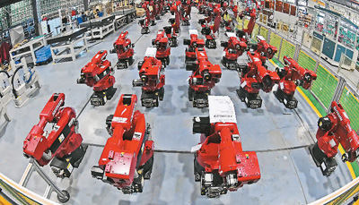

陕西交控集团-智慧党建平台

- 习近平在两会上提的要求各地是怎么落实的
- 来源：人民网－人民日报海外版 发布时间：2019-02-27 10:06:00 点击数量:383
西藏山南市扎囊县氆氇商户在销售氆氇。
新华社记者 普布扎西摄

辽宁沈阳一家公司的工业机器人生产车间。
新华社记者 杨 青摄
作业中的广西北海市铁山港。
新华社记者 陆波岸摄
2019年全国两会召开在即。中共十八大以来，习近平总书记在参加全国人大会议一些代表团审议时发表重要讲话，为多个省份的发展指明了方向。这些省份是如何落实习近平总书记要求的？
关键词：推进改革创新
2013年全国两会，习近平总书记参加上海代表团审议时强调，坚定不移深化改革开放，更加自觉地把工作着力点放到加大创新驱动力度上来，不断为创新发展注入新的动力和活力。
在之后几年的全国两会上，习近平总书记又多次强调改革创新。各地认真落实习近平总书记要求，全力推进改革创新。
各地将推进供给侧结构性改革作为经济工作的主线。
在推进供给侧改革过程中，湖南科学把握“加法”和“减法”，既雷厉风行地“退”，也大张旗鼓地“进”。全省钢铁、煤炭、造纸、有色、重化工、采砂等大规模退出，关停“散乱污”企业达3747家。其中，株洲清水塘老工业区261家企业在去年底前全部关停。
淘汰落后产能形成倒逼机制，使得湖南一批好产业好项目蓬勃发展起来。目前，湖南装备制造、农产品加工、材料等产业规模上万亿元。电子信息产业、新材料产业风生水起，移动互联网业营收跨过千亿元门槛，长沙文创产业总产出超过2800亿元。
辽宁把推进供给侧改革作为振兴辽宁工业的关键一招，落实“三去一降一补”重点任务，近两年化解煤炭产能1380万吨，减免税费2700多亿元；相继出台推动全省工业经济高质量发展实施意见等文件，促进科技与经济深度融合，推动工业经济向高端化、智能化、特色化、绿色化发展。2018年，辽宁全省地方重点国有企业实现营业收入4243亿元，同比增长10.7%；利润总额同比增长40.4%。
不少省份探索让科技创新成为产业体系的支撑。
在贵州这一经济相对欠发达地区实施国际最前沿的大数据产业发展战略，不少人曾对此抱着怀疑态度。2014年以来，贵州发挥后发优势，强力实施大数据战略行动。如今，贵州全省大数据企业达9500多家，1625家实体企业与大数据深度融合发展，数字经济及其吸纳就业增速连续3年居全国前列。大数据已经成为贵州的一张新名片。
深化科技创新重在落地，重在科技成果转化。在上海，越来越多高校院所的科研人员跳出论文、“帽子”、考核的枷锁，借力不断增多的研发与转化功能平台，在集成电路、生物医药、人工智能、新材料等一系列前沿科技领域突破卡脖子的“瓶颈”。
多地创新社会治理，加速形成共建共治共享的格局。
广东省广州市增城区下围村曾是远近闻名的“问题村”，如今成功实现了从“乱”到“治”的转身。在区、镇党委的支持下，2014年以来，村中事务通过村民代表大会商议。每个人最少有8分钟的发言时间，每一次的表决议题和内容，都提前通过村政务微信平台推送给每一位村民，整个议事过程实时直播。大事小情商量着办，用群众习惯的方式来解决群众身边的问题，曾经的治理痼疾也就迎刃而解。
关键词：扩大对外开放
“要加快形成面向国内国际的开放合作新格局。”2015年全国两会，习近平总书记参加广西代表团审议时发表重要讲话。各地按照习近平总书记要求，不断拓展对外开放的广度、深度。
多个省份通过全方位开放，实现跨越式发展。
沿海沿江又沿边的广西有突出的区位优势，但由于多种因素制约，发展长期滞后。
如今，广西正全力承担起习近平总书记赋予的“三大定位”新使命——构建面向东盟的国际大通道，打造西南中南地区开放发展新的战略支点，形成21世纪海上丝绸之路和丝绸之路经济带有机衔接的重要门户。
开放发展为广西带来了历史性变迁。广西沿海港口吞吐能力目前已经超过2亿吨，广西高铁运营里程达到1800多公里，西江“黄金水道”直通粤港澳，上汽通用五菱印尼公司投产……
许多地方以“一带一路”建设为重点，推动新一轮高水平对外开放。
黑龙江主动对接“一带一路”，积极参与中蒙俄经济走廊建设，并明确定位“打造一个窗口、建设四个区”——中国向北开放的重要窗口，建设黑龙江（中俄）自由贸易区等。同时全力推进同江铁路桥、黑河公路桥、东宁界河桥等跨境交通基础设施和黑瞎子岛陆路口岸建设。2018年，黑龙江全省外贸进出口总额增长36.4%，口岸货运量增长37.1%。
开放也倒逼着多地多领域改革。
2013年9月29日，中国（上海）自由贸易试验区挂牌成立。次日凌晨，国内第一份外商投资准入负面清单推出，列出190条外商投资特别管理措施。这份负面清单以“中国速度”迭代更新：2014年版缩减到139条，2018年最新版只剩下45条。
广东在原有“外资十条”基础上发布修订版政策，在九大领域实施允许设立外商独资企业等新举措；广东自贸试验区深改方案获国家批准，获批40项改革自主权。截至2018年底，各地、各部门出台“外资十条”贯彻、配套文件超过100个。2018年广东实际利用外资1450.88亿元人民币，同比增长4.87%；外贸进出口总额超1万亿美元，约占全国1/4。
关键词：决战脱贫攻坚
在全国两会上，习近平总书记多次强调脱贫攻坚。不少省份将脱贫攻坚视为头等大事和第一民生工程，向脱贫攻坚发起总攻。
贵州曾长期是我国贫困人口最多的省份。如今，脱贫攻坚成为贵州最大的政治、最重的任务、最严的责任。一年到头，贵州全省脱贫攻坚工作精准开展、无缝对接：“春风行动”，1400万亩蔬菜种植等产业大举推开；“夏季攻势”，深入开展“贫困人口错评漏评”等专项治理；“秋季喜算丰收账”，加强督察考核。
5年来，贵州脱贫攻坚连战连捷：减少贫困人口近700万人，贫困发生率下降到4.3%，减贫人数和易地扶贫搬迁人数位居全国前列。
脱贫攻坚进入决战决胜阶段，各地的扶贫措施更加精准。
今年新春上班第一天，湖南20位省领导分赴20个贫困县开展脱贫攻坚专题调研，面对面倾听贫困群众呼声，与基层干部群众共商脱贫良策。调研不发通知、不打招呼、不听汇报、不用陪同接待，直奔基层、直插现场，深入67个乡镇、98个村，走访贫困户241户、非贫困户36户。通过调研使扶贫更加精准，做到因户施策、因人施策。
精准扶贫，多地下足了“绣花”功夫。
四川昭觉县支尔莫乡阿土勒尔村，曾是出行困难的“悬崖村”。2017年6月30日，总共耗用6000根钢管、120吨钢材、近3万人次人力，从山底通往村庄的2556级钢梯竣工。因地制宜的“绣花”功夫让“悬崖村”结束了“出行难”历史，开启了全新天地。农家乐、苞谷酿酒作坊、帐篷酒店……越来越多的“新玩意”出现在“悬崖村”，村里还引进旅游公司，修建旅游索道。
各省份实际情况不同，脱贫攻坚的具体举措也各有侧重。
路，是边疆人民走向富裕和现代化的希望。数据显示，2018年，西藏投入32.5亿元，实施177个资源路、产业路、旅游路项目建设。截至2018年底，西藏公路通车总里程突破9万公里。西藏民航执飞88条航线，通航47个城市。青藏铁路延伸线拉日铁路、拉林高等级公路相继通车，拉萨至那曲、拉萨至日喀则高等级公路陆续开工。2018年，西藏25个县（区）脱贫摘帽，贫困发生率从28.8%下降到7.9%，广大农牧区基础设施大为改善。
近年来，新疆持续深化援疆扶贫、定点扶贫、区内协作扶贫等方式，实施“千企帮千村”精准扶贫行动，一批生态环境恶劣的深度贫困村通过易地搬迁实现整体脱贫。
“十三五”期间，广西计划搬迁建档立卡贫困人口71万人。截至2018年底，累计搬迁贫困人口69.3万人，搬迁入住率达99%。搬迁之后发展靠产业。据统计，2018年广西产业扶贫覆盖率达80%以上。
关键词：落实环保责任
2015年全国两会，习近平总书记参加江西代表团审议时强调：“环境就是民生，青山就是美丽，蓝天也是幸福。要像保护眼睛一样保护生态环境，像对待生命一样对待生态环境。对破坏生态环境的行为，不能手软，不能下不为例。”近年来，全国各地铁腕治污，像保护眼睛一样保护生态环境。
多地展现出“壮士断腕”的决心。
青海将自然保护区内的矿业权全部注销，青海湖鸟岛沙岛、年保玉则等景区接连叫停旅游经营活动，可可西里世界遗产地“禁止非法穿越”，三江源1.1万户牧民为生态离开故土……任何时候、任何情况下都要坚持生态保护优先，已成为青海干部群众的共识。
为保护野生东北虎豹，吉林省甚至让计划修建的高铁为虎豹改道。2017年，东北虎豹国家公园管理局在长春挂牌成立，东北虎豹的生存繁殖领地不断扩大。监测数据显示，目前至少有27只东北虎和42只东北豹长期活动于吉林省区域内。
江苏宜兴经济实力一直处于全国同类城市前列，化工是支柱产业。为了改善环境，宜兴坚决关停有污染隐患的化工企业，压减落后产能。2018年，江苏全年分别压减钢铁、水泥、平板玻璃产能80万吨、210万吨、660万重量箱，关闭高耗能高污染及“散乱污”规模以上企业3600多家。
不少地方弱化甚至取消了GDP考核，将“生态优先”作为重要考核标准。
贵州取消重点生态功能区的10个县GDP考核，弱化40个县GDP考核，对各市州党委、政府生态文明建设开展评价考核，实行党政领导干部生态环境损害问责。
江苏省徐州市铜山区规定，侧重旅游经济的乡镇不考核工业指标，以免盲目引入项目污染环境。
通过构建绿色产业体系，各地正在将绿水青山变为金山银山。
通过发展智慧农业、健康旅游、新能源等生态绿色产业，江西经济的“绿色含量”稳步提升，“绿色红利”加快释放。今年江西将进一步提升绿色发展水平，力争高新技术产业增加值占规模以上工业比重达到35%，服务业增加值占GDP比重达到45.8%。
绿水青山就是金山银山、冰天雪地也是金山银山。以前一下雪，黑龙江“百姓猫冬，工地停工”，如今，黑土地盼雪盼降温。黑龙江得天独厚的冷资源正变成热产业：在冰城哈尔滨，冰雪大世界景区今年游客较去年同期提前6天突破百万；雪乡景区今年春节游客同比增长30.43%；黑河市寒区试车产业蓬勃发展……
关键词：净化政治生态
2017年全国两会，习近平总书记参加辽宁代表团审议时指出，要严肃党内政治生活，深入整治选人用人不正之风，坚持正确用人导向，真正把忠诚党和人民事业、做人堂堂正正、干事干干净净的干部选拔出来，形成风清气正的良好政治生态。
一段时间内，辽宁政治生态遭到严重破坏。带着习近平总书记的期望和嘱托，辽宁干部群众上下一心，迎难而上，持续修复政治生态。辽宁制定并出台《关于贯彻落实习近平总书记参加十二届全国人大五次会议辽宁代表团审议时重要讲话精神推进干部作风转变的实施意见》，突出问题导向，聚焦解决干部作风建设存在的8方面问题，确保取得实效。
2015年全国两会，习近平总书记在参加江西代表团审议时强调，要着力净化政治生态，营造廉洁从政良好环境。
4年来，江西全面落实习近平总书记重要讲话精神，省委下发文件坚决全面彻底肃清苏荣案余毒，对涉及苏荣案的43名党员领导干部依纪依法作出严肃处理。江西坚决纠正选人用人不正之风，保持了反腐败斗争高压态势，政治生态不断优化。
一名企业经营者对这几年江西干部作风的转变深有感触。“过去逢年过节，一些企业主会到政府部门走动走动，送点礼物，如今就算有人想送，干部也不敢收了。”
2014年全国两会，习近平总书记参加安徽代表团审议并发表重要讲话，首次提出“三严三实”重要论述，强调“各级领导干部都要树立和发扬好的作风，既严以修身、严以用权、严以律己，又谋事要实、创业要实、做人要实”。
近5年来，安徽始终把学习践行“三严三实”作为重要政治任务，对贯彻落实“三严三实”提出明确要求，强调要把“三严三实”作为座右铭，把忠诚干净担当作为行为准则。
“三严三实”的落实效果，可从“一包烟”中窥见。2017年1月11日，安徽省动物卫生监督所派人到淮南市畜牧兽医局检查畜产品安全，该局工作人员接待时上了一包烟，写入菜单报销，淮南市纪委定向监督时查出，认定此举违规，对该工作人员进行了处分。
- 上一篇： 推动金融业高质量发展，习近平这样部署
- 下一篇： 中共中央关于加强党的政治建设的意见